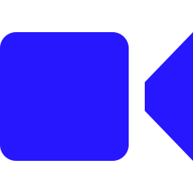

Numer telefonu:
Numer telefonu: Email:
Email: Data urodzenia: 24-10-2003
Data urodzenia: 24-10-2003 Miejsce zamieszkania: Wrocław
Miejsce zamieszkania: WrocławO mnie
Nazywam się Patryk. Studiuję Informatyke na WSB we Wrocławiu. Interesuje się programowaniem od kilku lat, lecz systematycznie zacząłem się uczyć programowania od 6 miesięcy. Od tamtego czasu codziennie staram się poświecać od 1-2 godzin na nauke programowania. Aktualnie uczę się Front-end w wolnym czasie i pracuje przy obróbce wind.
Doświadczenie zawodowe
- 2016-2020 - prace sezonowe
- 2020 - 2022 wykańczanie wnętrz
Języki
- Angielski - B2
- Polski - Ojczysty
Wykształcenie
- Posiadam wykształcenie średnie (lo nr1 we wrocławiu) Liceum nr 1 we wrocławiu
- Aktualnie jestem studentem pierwszego roku informatyki WSB we wrocławiu WSB wrocław
Zainteresowania
-

Kino
lubie ogladac filmy w kinie
-
Programowanie
lubie programowac
-
Piłka Nożna
lubie grac w pilke
-
Crypto
intersuje sie crypto od niedawna, ale powoli się wdrążam